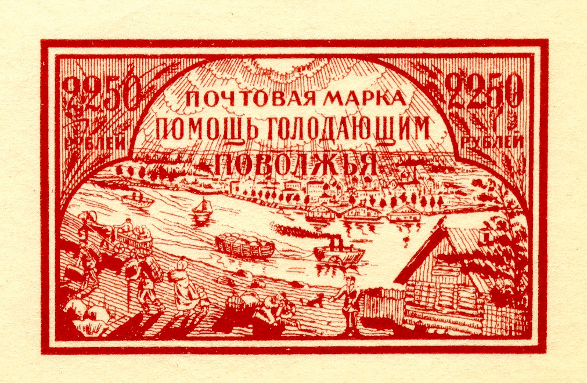

Return To Catalogue - Russia, Sowjet Union, part 1 - Russia, Sowjet Union, part 3 - Russia Overview
Note: on my website many of the
pictures can not be seen! They are of course present in the
catalogue;
contact me if you want to purchase the catalogue.
2250 R green 2250 R red 2250 R brown 2250 R blue (other design, suffering people)
Forgeries of the green, red and brown stamp seem quite abundant. In the forged stamps, the shadow of the walking stick of the man in the left corner does not touch the walking stick.

Forgery
2 t red 2 t green 4 t red 6 t green

5 R black and yellow 10 R black and brown 25 R black and lilac 27 R black and red 45 R black and blue Overprinted with red aeroplane and changed colors (airmail) 45 R black and green With golden overprint (1923)
1 R + 1 R on 10 R black and brown

(25 R) violet (boat) (25 R) blue (train) (25 R) violet (car) (25 R) blue (aeroplane)
10 R blue (labourer) 50 R brown (soldier) 70 R lilac (soldier) 100 R red (soldier) Overprinted and surcharged for Siberia (1923)

Issue for Siberia: overprinted 'D.B.
KOP. 5 KOP. 3OLOTOM'
1 kop on 100 R red (perforated or imperforate) 2 kop on 70 R lilac (imperforate) 5 kop (red) on 10 R blue (imperforate) 10 kop on 50 R brown (imperforate)
With '1923 P.C.F.C.P' incorporated in the design, perforated

1 R orange (labourer, non issued) 2 R green (farmer, non issued) 3 R red (soldier) 4 R brown (labourer) 5 R blue (farmer) 10 R grey (soldier) 20 R lilac (soldier) With no year indication, inscription 'C.C.C.P.', currency changed, perforated or imperforate
1 k orange (labourer) 2 k green (farmer) 3 k red (soldier) 4 k red (labourer) 5 k lilac (labourer) 6 k blue (farmer) 7 k brown (soldier) 8 k olive (labourer) 9 k red (farmer) 10 k blue (soldier) 14 k blue (soldier) 15 k yellow (farmer) 20 k green (labourer) 30 k violet (farmer) 40 k grey (soldier) 50 k brown (farmer) 1 R brown and red (soldier) 2 R red and green (labourer) Larger sizes 3 R brown and green (soldier) 5 R blue and brown (labourer)

{kind=link}
{kind=link}